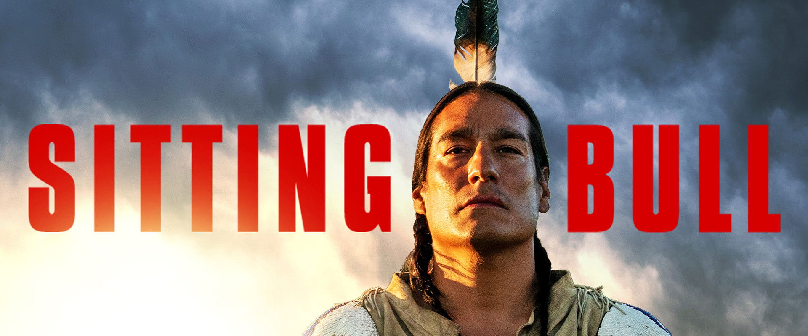
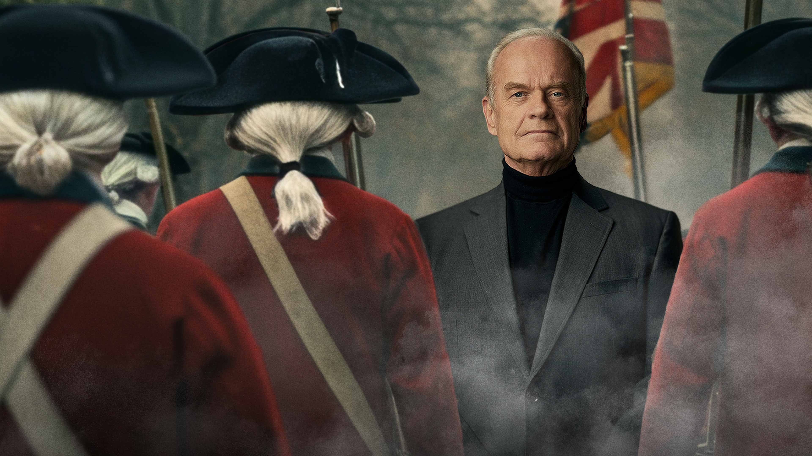
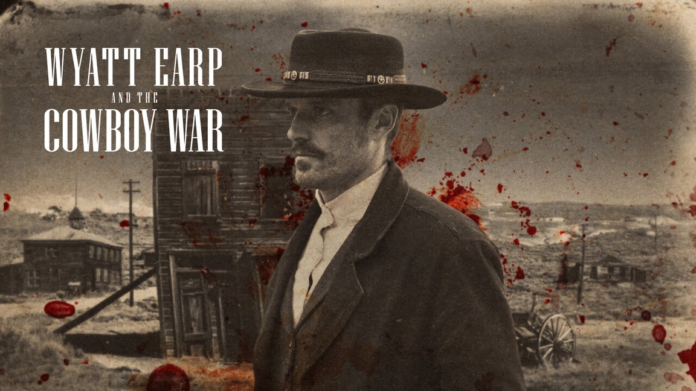
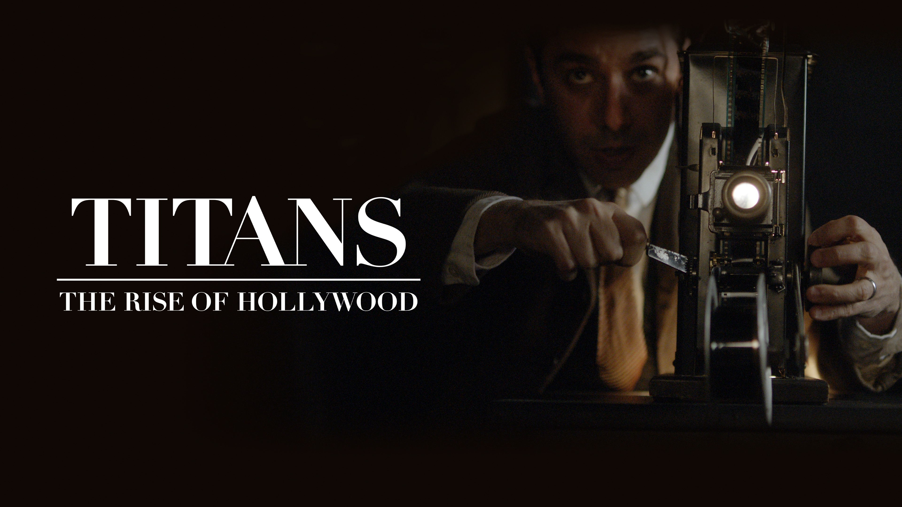
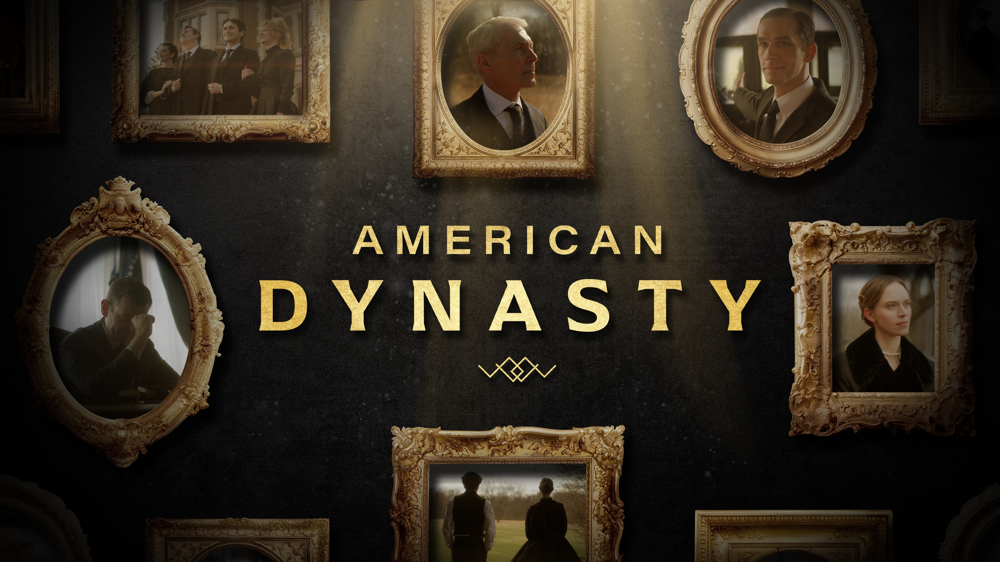
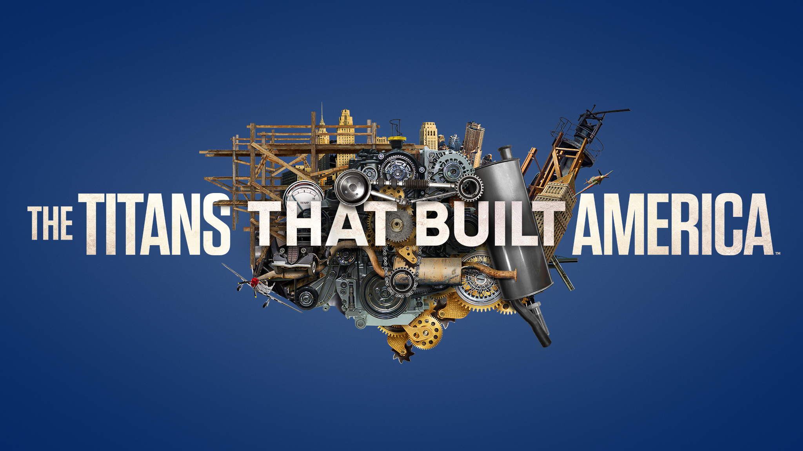

ID: INC-001

Sitting Bull
Co-Executive Producer
We craft cinematic narratives that leave a lasting mark. Founded by veteran producers, built for the modern era of storytelling.
Incandescent is a full-service production company specializing in premium documentary and scripted content. We handle development, production, and delivery — concept through final master. Our founding team brings experience from Netflix, History, and Discovery, with credits including Wyatt Earp and the Cowboy War, Sitting Bull, George: Rise of a Revolutionary, and The Titans That Built America. Based in New York, we partner with streamers, networks, and brands to produce work that reaches global audiences.






A rare blend of creative instinct and business acumen. Lorenzo has developed and produced series across Netflix, History, and Discovery — including Wyatt Earp and the Cowboy War, Sitting Bull, and George: Rise of a Revolutionary. Trained at HBO and the University of St Andrews, he's a native New Yorker with an eye for stories that resonate globally.
Emmy Award winning producer and editor with nearly two decades across every genre of television. Credits include Roman Empire (Netflix), Sons of Liberty (History), The Men Who Built America (History), The World Wars (History), and Making of the Mob (AMC). Member of the Television Academy, Producers Guild of America, and Motion Picture Editors Guild.
Emmy-winning editor and producer with over a decade of experience in premium documentary. Lead editor and producer across signature series including The Men Who Built America (History), The World Wars (History), American Genius (NatGeo), The Making of The Mob (AMC), The American West (AMC), and American Playboy (Amazon Studios).
We're always looking for the next great story. Whether you have a project to discuss or want to collaborate, we'd love to hear from you.
hello@incandescent.tv